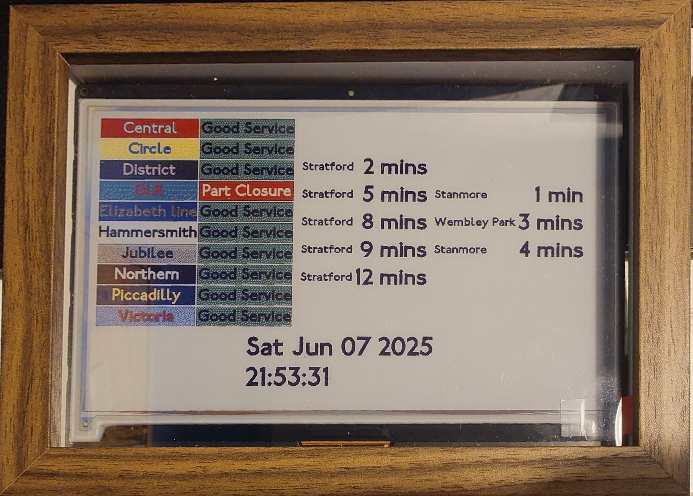
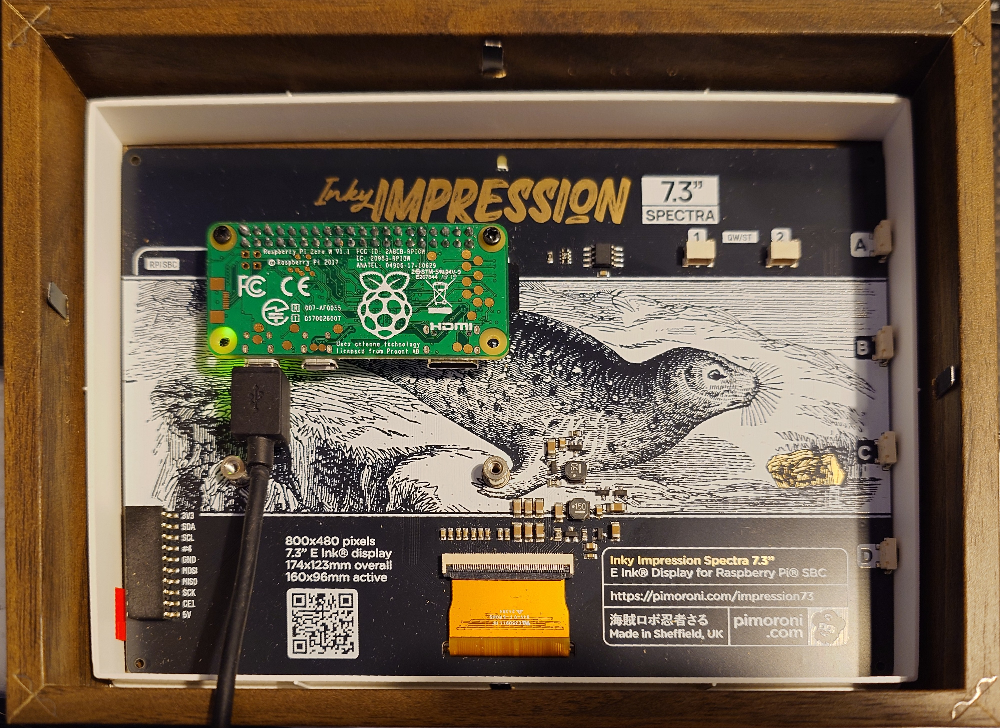

I came across this video a few months ago the InkyPi e-ink display:
Without absolutely no hesitation, the algorithm then chose to proceed bombarding me with any and all hardware e-ink display projects. I'm not complaining as it was an interesting rabbithole to dive into and turned out into a useful project for me to use my Raspberry Pi chilling in a drawer.
When I initially bought my Raspberry Pis (a 4 and a 0W), I had intended on using it for a homelab (as everyone seemed to recommend to get into devops/security) which I then never ended up using because I didn't build out of a need but rather to experiment with. I'd figured if I was going to make something with the e-ink display then I would need to make it useful and have little/no maintenance once it's going in order for me to use it. Then I remembered another video
I watched a while back and figured I would make a dashboard, similar to https://tubestatus.net/ to print the statuses of my most frequent lines and train arrival data as it would actually be useful for me.
I had first built it first using my RPi4B and had absolutely no major issues building whatsoever with it. Most of my time debugging was embarrassingly spent designing the front end with HTML + JS + CSS making it look pretty (vibe coding to the rescue!) but eventually I got it looking how I wanted it to. Then I started researching into power consumption and it uses roughly somewhere between 2.5W-5W. Now, the only power hungry part of this project is when the screen is refreshed at a regular interval so the overall average consumption is probably on the low end.
However, if you compare it to the RPi0W, it's significantly less, somewhere around <1W. A reduction in more than half of what the RPi4B uses. This seemed the way to go.
Little did I know how much pain it would cause me to debug everything to get it running on the RPi0W.
The first issue I ran into was how slow everything would run on it. What took me a 1-2 minutes to install the dependencies for the project on the RPi4B, ended up taking overnight on the RPI0W. Quite often the RPi0W would freeze during downloading the Python dependencies and so I would reboot the device, install the dependencies again and pray it would work. Eventually, I managed to tweak the swap file to increase the RAM. I also would download the wheels of the Python dependencies and then install it locally to see which libraries were causing the freezing (looking at you PIL). I had to reinstall that library an annoying amount of times due to import issues. Once I had those issues resolved, I ran into the next issue of the screenshot functionality. The process of uploading data to the display is through the following:
Jinja template -> render HTML -> Chromium headless screenshot -> Upload image
When I would try to upload an image from a HTML template, the logs would throw an error similar to:
File "/home/pi/project/InkyPi/src/plugins/weather/weather.py", line 76, in generate_image
Apr 01 09:09:26 pi inkypi[1758]: raise RuntimeError("Failed to take screenshot, please check logs.")
Apr 01 09:09:26 pi inkypi[1758]: RuntimeError: Failed to take screenshot, please check logs.
As the code for repo for this is relatively new, it isn't straight forward to pinpoint specifically what was going wrong. Many print statements later I painstakingly, I managed to identify where the error was coming from. It was the Chromium binary was throwing segmentation faults everytime it was invoked 😠. Many uninstallations and installations of a plethora chromium versions and nothing worked. With a bit more digging around and it turns out modern Chromium versions aren't supported on 32-bit architectures - which is what the RPI0W has. :(
A lot of research was gone into finding alternative methods to convert HTML files to an image that worked.
Firefox
didn't seem to handle specifying window sizes correctly, HTML to PS conversions didn't convert correctly.
Eventually I found wkhtmltoimage, which just what I needed it to.
With a bit more tweaking of the source code (and CSS as my initial template had some flaws in it), I eventually managed to get it working. See the source code here: https://github.com/VRvinny/InkyPi
Front:
Back:
